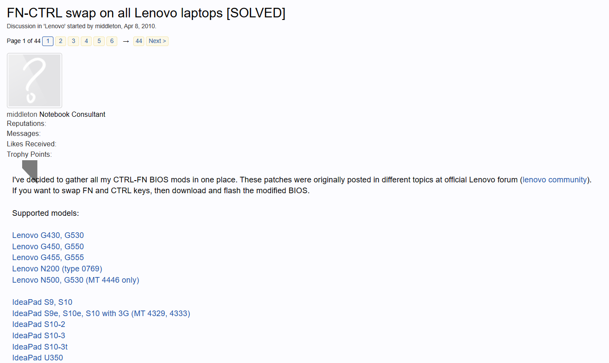

HexyHack
Archived modded BIOS files for Lenovo laptops (and ThinkPads) made by Middleton.
Files were taken from dead NotebookCheck forum, which I found searching one of his mods.
fortunately almost all (except N500, G530) download links are still available, so if you don't need download all whole pack
you can go to archived thread and find a link to your model.

Links:
NotebookCheck (archived)|AnonFiles|Send.cm
## List of avaiable devices
Lenovo:
* Lenovo G430, G530
* Lenovo G450, G550
* Lenovo G455, G555
* Lenovo N200 (type 0769)
Ideapad series:
* IdeaPad S9, S10
* IdeaPad S9e, S10e, S10 with 3G (MT 4329, 4333)
* IdeaPad S10-2
* IdeaPad S10-3
* IdeaPad S10-3t
* IdeaPad U350
* IdeaPad U450, U450p
* IdeaPad Y430
* IdeaPad Y450
* IdeaPad Y530
* IdeaPad Y550
* IdeaPad Y550p
* IdeaPad Y460, Y560
* IdeaPad Y460p, Y560p
ThinkPad series:
* ThinkPad SL300, SL400, SL400c, SL500, SL500c
* ThinkPad L410, L510, SL410, SL510
* ThinkPad R400, T400
* ThinkPad R500
* ThinkPad R60, R60i (Machine types 94xx)
* ThinkPad R61
* ThinkPad T400s
* ThinkPad T500, W500
* ThinkPad T60, T60p
* ThinkPad T61, T61p
* ThinkPad W700, W700ds
* ThinkPad X200, X200s
* ThinkPad X200 Tablet
* ThinkPad X300
* ThinkPad X301
* ThinkPad X60, X60s
* ThinkPad X60 Tablet
* ThinkPad X61, X61s
* ThinkPad X61 Tablet
## Attention!
I don't take any responsibility for broken devices when something went wrong during flashing.
There is no warranty or support guaranteed so please keep this in mind if you intend to use this software.
Credits: Middleton